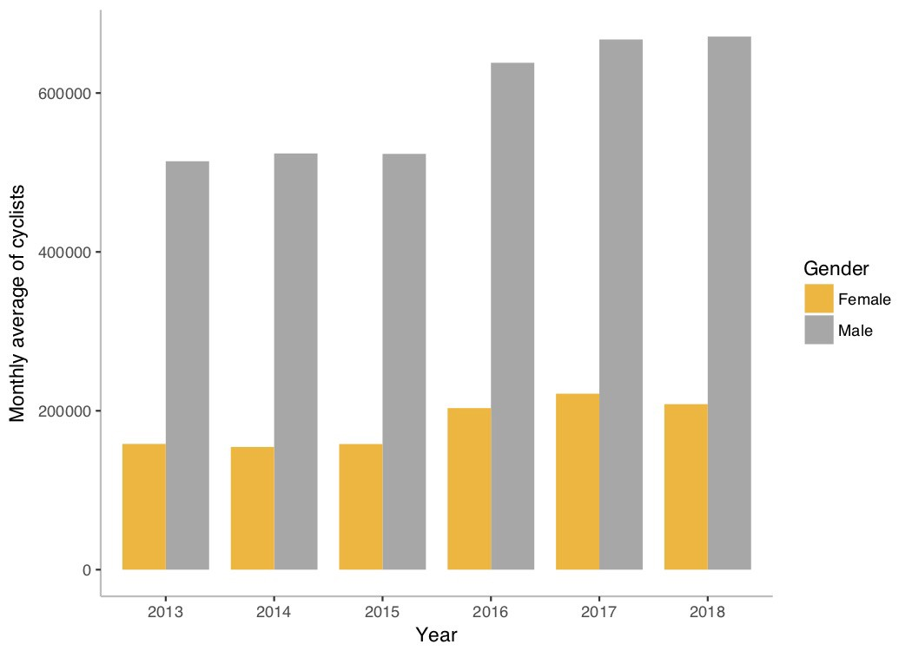
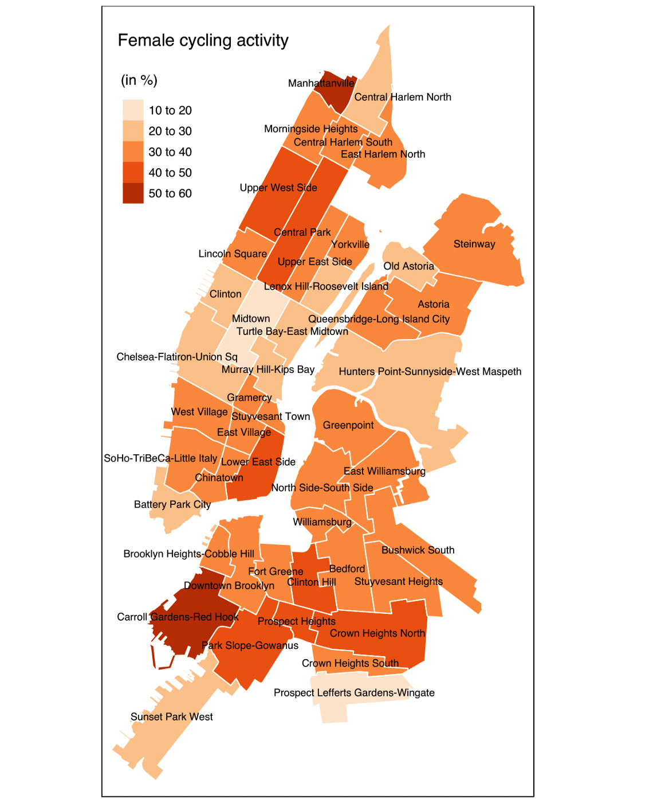

Women on wheels
Analysing the effect of safety on persisting gender gaps in cycling in New York City
August 8, 2019
Read on Medium
“I’ll meet you guys there” she says whilst unlocking her bike. And so she will, with plenty of time to spare as she arrives way ahead, whilst the rest of us public transportation commoners are patiently counting the stops in the sweltering underground heat. Cycling is so practical, and I always find women who cycle just so … cool. Still, I do not have a bike and rarely take the opportunity to rent one.
Cycling is a prime example of the inexpensive and sustainable modes of transportation our cities are in desperate need of. Yet, in many places around the world, cycling remains too uncommon. Beyond place-specific social, cultural and environmental obstacles, there is a surprising trend: women cycle massively less than men.
Now, depending on where you live, you may react differently to that statement. If you live in Amsterdam, you would probably frown at this observation. And that would be justified. 56% of trips in the Netherlands are done by women. The same goes for several European countries. But if you live in the UK, you will find that is less true. Living in a city in the United States? Finding a woman on a bike is more like looking for a needle in a haystack.
Why is that?
Theories explaining this gender gap are numerous. The first series of explanations center around the classic gendered clichés you would expect: stiletto heels are admittedly not the best attire for riding a bike and your silk blouse doesn’t look as professional when it is drenched in sweat. Ah, and of course, women just aren’t as sporty as men. Ok so I am exaggerating a bit, but you get the picture: I’m no big fan of this theory. But as much as I would like to put on my platform heels and ride through the urban jungle to prove a point, I have to admit the idea of waiting for that green light at Piccadilly Circus next to 20 lycra-ed up cyclists as if it were the Tour de France does seem a bit intimidating. And this probably goes for many women and men alike — cycling in a big city just doesn’t seem that accessible or enjoyable for the uninitiated.
Particularly as a woman, apprehensions in cycling can sometimes even be a question of feeling uncomfortable or straight out unsafe. Beyond the physical (and mental) challenge that cycling can be, several female cyclists have reportedly been harassed. It seems that catcalling and generally inappropriate behaviour on the street does not escape the saddle.
Another explanation for low female cycling rates is that of another inherent characteristic of being a woman: motherhood. Again, any Swede on paternity leave will frown to this, but the fact is that in many places around the world, women are usually the caregivers and responsible for household tasks. See it this way: children and groceries take up slightly more space than a messenger bag. Although the increasing number of badass cargo bike mums will probably take you up on that!
Lastly, the theory I find the most intriguing, and perhaps the most relatable, is that women are more concerned with their safety than men. Some studies have shown that women tend to be more risk averse and prudent, which could partly explain the reticence to cycle in cities. This explanation is the one I chose to explore in more detail for my Master’s dissertation. More specifically, I used data from the Citi Bikes in New York City to test that hypothesis. Some interesting trends came out, and so here they come. Drum roll…
1. Men cycle more than women
Surprise, surprise! Since 2013, while the use of Citi Bikes has generally increased, the overall male representation in New York City remains at 76%.
Average monthly gender ratio in cycling per year, NYC, 2013–2018

2. Women who cycle are generally younger than men
Female cyclists are proportionally younger than male cyclists. The biggest age group for women is that of 20 to 30 year olds, whereas men are mostly 30 to 40 years old. Perhaps this means that women are less scared when they are younger and so they cycle more. It could also come down to a generational difference: female cycling has been particularly encouraged in the past years — this can be seen with the creation of more and more cycling groups made for women. A third explanation could support the theory that women do not cycle because they take care of children, as the age group would illustrate.
Age groups of Citi Bike users according to gender, NYC

3. Women cycle in less central urban areas
While no female hotspots can be identified per se, the few areas where women and men at least equalise in numbers are not in the centre of any of the boroughs. The areas where women cycle the most correspond to more residential zones. Take the Columbia Street Waterfront District: the area has been subject to a rapid increase in population with the proliferation of housing developments, which has made it particularly residential. Likewise, higher rates of female cycling appear around Central Park, compared to other busier areas in central Manhattan, where a stark majority of cyclists are men. While such spatial trends could partly be determined by gendered activities — for instance, the Central Business District hosts mainly male-dominated jobs — the gender ratio is so disproportionately high that it could also reveal that women cycle in generally quieter, less traffic-dense and consequently safer areas.
Gender ratio of cycling trips per neighbourhood, NYC
4. Women tend to use safer routes than men
To be able to start retrieving some understanding of whether women are more precautious in their cycling patterns, I looked at three main characteristics:
- The presence of cycling lanes and other relevant infrastructure
- The speed limit of roads;
- The number of cycling accidents on roads.
It is important for me to stress here that the Citi Bikes data correspond to points, and so the routes referred to below correspond to simulated ones (aka the shortest cycling itineraries between two points). This means conclusions drawn cannot be 100% accurate, but rather serve to direct some initial understanding of gendered cycling patterns. While they difficultly predicted the probability of the gender being female, I found that there was some relation. In other words, it revealed that the cyclist is more likely to be a woman if the cycling route has more bicycle lanes, and less likely if the route has roads with higher speed limits and more accidents recorded per mile. The strongest variable turned out to be the presence of cycling lanes, as the odds of the cyclist being female increases by 10.9% if a route consists of only bike lanes. Such a finding is ultimately consistent with the hypothesis that women favour safer routes.
All in all, it is certain that making cycling safer is essential for the turn that urban mobility is taking, be it in New York or several other cities around the world. Regardless of the reasons for which women do not cycle, it seems that increasing the number of cycling lanes and making related infrastructure more robust can only help to encourage more women to get on the saddle. In fact, cities around the world are already taking action — in Paris, where I live, new cycling lanes are popping up constantly. In cities such as Copenhagen or Amsterdam, where cycling is a no-brainer option for getting around, the “safety in numbers” theory — that is, the more people cycle the safer it gets — is evident. As cities increasingly adapt to such forms of active mobility, it is hopeful that this virtuous cycle will get more women on wheels.